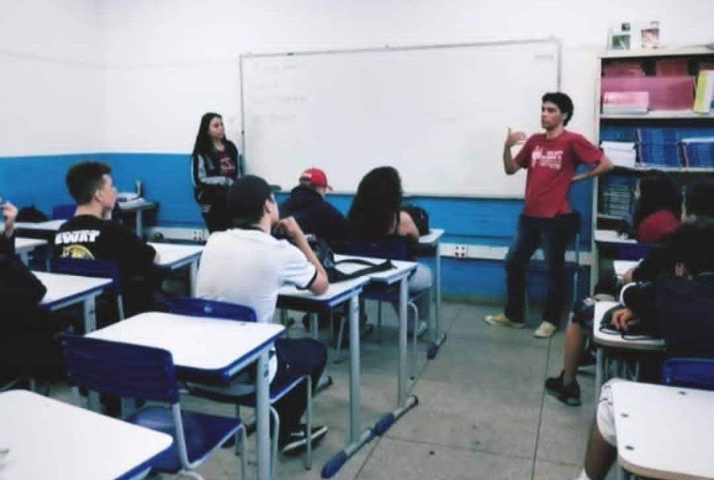
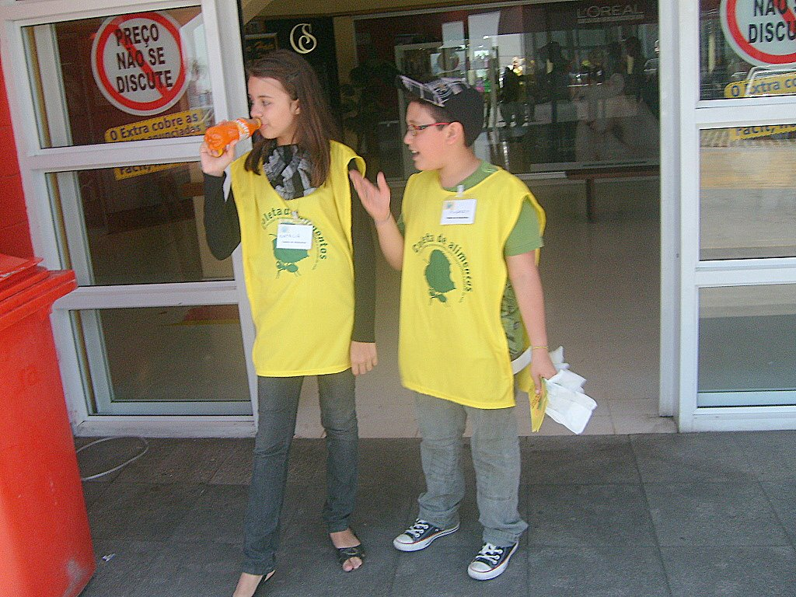

Nasci em Sorocaba, interior de São Paulo, no dia 25 de Janeiro de 2000, estudo Física na Universidade de São Paulo - USP e programação na TaqTail.
Sempre estudei em escolas públicas de Ensino Estadual, com isso, participava de cursos/projetos assistencialistas.
Comecei participando do Jovem cientista ofertado pela Ufscar-Sorocaba e depois fiz um ano de inglês no centro de linguas.
Ao sair do ensino médio ingressei na Ufscar de Sorocaba no curso de Licenciatura em Física, quando completei um ano de curso me transferi para a USP afim de cursar Bachreal e Licenciatura.
Aos 14 anos comecei a trabalhar como babá para complementar a renda em casa, aos 16 anos pude dar aulas de reforço para alunos do ensino fundamental 1 na disciplina de matemática.
Durante a graduação participei do PIBID dando aulas de física para o ensino médio em escolas públicas, depois ingressei do clube do conhecimento focado em divulgação científica de astronomia e atualmente trabalho no projeto de mecânica experimental com imagens, voltado a física experimental.
Cresci em um lar onde minha mãe era assistencia social e fundou a Ação Online, plataforma de arrecadação e doações, com isso,sempre participei de voluntariado, desde arrecadações de água e alimentos para Itu quando ocorreu a falta de água, até campanha de dia das mães/país na Instituição de Longa Permanência para Idosos em Sorocaba.
Quando ocorreu a pandemia, disponibilizamos um google forms para moradores de Sorocaba e Região, onde classifiquei e organizei as famílias com critérios de prioridade, por exemplo, se paga aluguel, se tem idosos ou crianças em casa, etc. Além disso, também entrava em contato com as famílias para arrumar a logistíca das entregas.
Ademais, também me interessei bastante por divulgação científica, dessa forma, participei da Semana da Física e da Universidade Aberta na Ufscar e na USP, com a finalidade de deixar mais inclusivo e acessível o contato da comunidade com a universidade.
